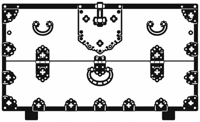

책의 분류(지역별, 상판 모양, 다리 모양, 쓰임새, 재료)를 그대로 썼고, 소반장 완성품은 따로 묶었습니다. 막대를 누르면 오른쪽에 그 기종의 기물 구성이, 아래에 사진이 나옵니다.
책 2장 「소반의 종류」에 실린 옛 소반과, 3장 끝 「완성된 소반」에 실린 소반장 완성품입니다. 막대를 누르면 아래 사진이 그 갈래만 보입니다.
도록 도판을 잘라 실었습니다. 사진을 누르면 크게 보고 치수·연대·소장처를 확인할 수 있습니다.
두 컬렉션 모두 서안·경상부터 소반까지 같은 목가구 기종만 놓고, 각 기종이 그 합계에서 차지하는 비율(%)을 비교했습니다. 이건희 쪽은 목록집 〈표1〉 기준입니다.
가로·높이가 모두 적힌 것만 찍었습니다. 붉은 별은 소장 안궤(72.3×33×44.1cm), 붉은 8각 별은 소장 언양반닫이(102.5×49.8×58.4cm)입니다. 점을 누르면 사진이 열립니다.
행을 누르면 사진이 열립니다. 치수 단위 cm. 사진 번호·이름·연대·소장처는 책의 사진 설명에서 옮겼습니다. 세부 사진(사진11·16·18)은 뺐습니다. 치수는 책에 적혀 있지 않습니다.
자료·사진: 국립문화재연구소 『한국의 중요무형문화재 7 — 소반장(小盤匠)』(1997). 무단 게재를 금하는 비매품이니 개인 공부용으로 보세요.
